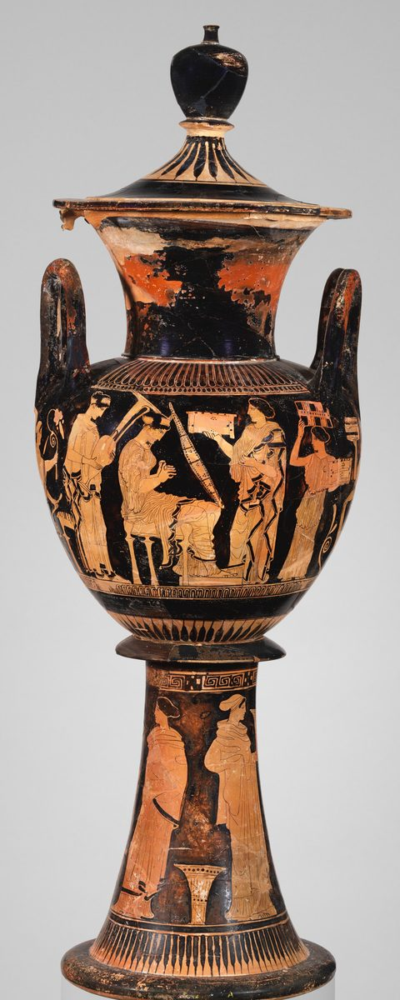
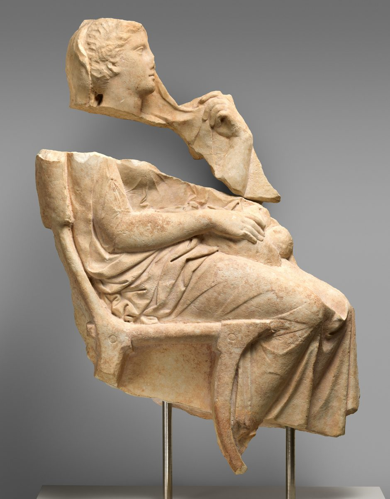
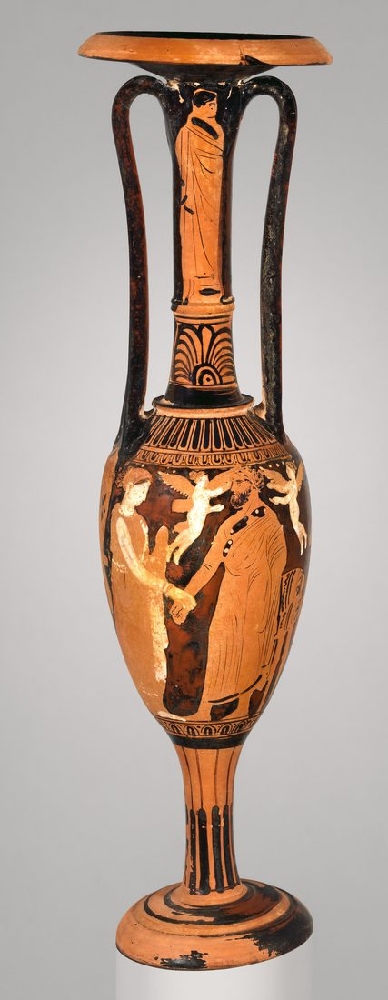

Unit 7 · Women in ancient Greece · Lesson 6
Wife, mother, heiress
Who acted for a woman in an Athenian family, and what did her guardian, her dowry, her birth and her sons mean for her place in it? Explain it: cause and effect, not just what came next.
Year 11 Ancient History · Present with → or space · Read on a phone with R

Images: The Met (CC0 1.0). Full details on the last slide.
Connect · 3 minutes · books closed · everyone writes one line · press K for the timer
Two grave monuments, two ideals
Contrast how Dexileos and Hegeso are shown.
Cold call two students: what is one difference you can see or read?
A young horseman strikes a fallen enemy. The inscription gives his father and says he died at Corinth, “one of the five cavalrymen”: action and war, on a family memorial.
A seated woman looks at an object in her raised hand, probably jewellery that was once painted, while a standing attendant holds an open box. The inscription gives her name and her father’s: “Hegeso daughter of Proxenos”: stillness and adornment; the chair and the servant suggest the household.
Both monuments name the father. Today: the family a woman belonged to, who acted for her, and why her birth began to matter more.
Learning intentions and success criteria · 2 minutes
Today’s goals
- explain the role of women in the Athenian family
- write an explanation answer that relates cause and effect
- explain the roles of the kyrios, the dowry and the epikleros
- explain why legitimate birth mattered more after 451/0 BCE
- write a 5-mark explain answer that says which reason mattered most
Syllabus outcomes: AH-11-02 proposes ideas about the varying causes and effects of events and developments · AH-11-03 explains the role and significance of forces, features, events, individuals and groups in shaping the past · AH-11-07 communicates historical understanding, applying historical knowledge, terms and concepts. Life Skills: AH-LS-05 describes features of places or societies in the ancient world · AH-LS-11 communicates information about the past using historical terms and concepts.
Note-making · the routine for the whole course
How to structure your notes
questions and key terms, written after
short phrases, arrows (→ leads to), abbreviations (c. = about; BCE = Before the Common Era)
- 1A new page for each lessonA cue column about a quarter of the page wide; title and date at the top; room for a summary at the bottom.
- 2Listen and look, then writeDon’t copy while a slide is being explained. Phrases, not sentences; a source for every claim.
- 3Write your own notes at each ✎ checkpointThen compare with the model notes, one row at a time. Add what you missed in a second colour.
- 4Write the cue questions afterwardsUse exam verbs: identify, describe, explain. To revise, cover your notes and answer the cues.
- 5Finish with a three-sentence summaryTwo checkpoints today: the life cycle and the law · terms and sources.
Key vocabulary · add to the unit word wall
Words for the Athenian family
| Writing terms | Meaning |
|---|---|
| Explain | NESA: ‘Relate cause and effect. Make the relationships between things evident. Provide why and/or how.’ Department advice: causes and links; say which mattered most. |
| Added today | Meaning |
| Cause, not sequence | A sequence says what came next: she married, then had sons. A cause says why: because …, which meant that … |
| Content terms | Meaning |
|---|---|
| Polis / oikos | A Greek city-state, such as Athens / a household: its people, property and slaves. |
| Kyrios | A woman’s legal guardian — her father, then her husband — who acted for her in law. |
| Dowry | Property a bride brought to her marriage; it had to be returned if her husband sent her away. |
| Engyē | The spoken pledge by which a kyrios gave a bride in marriage. |
| Epikleros | An heiress: a daughter whose father died leaving no son, married to a close male relative to keep the property in the family. |
| Citizenship law (451/0 BCE) | Pericles’s law limiting Athenian citizenship to those of citizen birth on both sides. |
| Added today | Meaning |
| Legitimate child | A child of a lawful marriage. In the law quoted in [Demosthenes] 46.18, a woman betrothed by her father, brother or grandfather: “her children shall be legitimate”. |
1 · The life cycle and the law · I do — the life cycle on the diagram
A woman’s life, and who acted for her
Born into her father’s oikos, the household of her father’s family. Her father is her kyrios.
Betrothed by a spoken pledge (engyē) between her kyrios and the groom. A dowry goes with her. Ischomachus says his bride was not yet fifteen.
Bears legitimate children and runs the household, as the men of the sources describe her role.
Her husband has died. The sources say little about this stage, so the diagram stays cautious.
[Demosthenes] 46.18: the father, brother or grandfather betroth her
[Demosthenes] 46.18 · [Demosthenes] 59.52 · Xenophon, Oeconomicus 7.5
Xenophon, Oeconomicus 7.11 and 7.24 · [Demosthenes] 59.122
The sources say little about widows; the diagram stays cautious
A branch: a daughter whose father died leaving no son became an epikleros (heiress). The law, as quoted in one speech, made her nearest of kin marry her or give her in marriage, so her father’s property probably stayed with his family.
In law, a man acted for her as a girl and as a wife: that is what kyrios means.
1 · The life cycle and the law · I do — wife and mother: childbirth and motherhood
What do men’s words say about mothers?

Who made each of these words, and what can they tell us about mothers?
They show what men expected of mothers, and what a man could imagine about childbirth. They cannot show how a mother felt, or what childbirth was like for the women of Athens.
… who was the best partner of home and children that we could get. … [God] had imposed on her the nourishment of the infants, he meted out to her a larger portion of affection for new-born babes than to the man.
Xenophon, Oeconomicus (probably after 362 BCE), a dialogue · trans. E. C. Marchant (Loeb, 1923) · Ischomachus is explaining what the god did
… wives to bear us legitimate children and to be faithful guardians of our households.
Spoken and probably written by Apollodorus, a law-court speech, about 343–340 BCE · trans. A. T. Murray (Loeb, 1939)
… for I would gladly take my stand in battle array three times o’er, than once give birth.
A tragedy first performed in Athens in 431 BCE · trans. E. P. Coleridge (1891)
1 · The life cycle and the law · I do — think aloud: what changed for wives and mothers?
The citizenship law of 451/0 BCE
… two years after Lysicrates, in the year of Antidotus, owing to the large number of the citizens an enactment was passed on the proposal of Pericles confining citizenship to persons of citizen birth on both sides.
A late 4th-century BCE work traditionally attributed to Aristotle · trans. H. Rackham (Loeb, 1935)
… he proposed a law that only those should be reckoned Athenians whose parents on both sides were Athenians.
Plutarch, a Greek biographer writing about 100–120 CE · trans. B. Perrin (Loeb, 1916)
- 1What did the law require?That a citizen must be born of citizens on both sides. Both writers say so, more than a century and more than five centuries after 451/0 BCE.
- 2What changed for a wife and mother?Before it, one citizen parent was probably enough, if the child was legitimate (Blok). After it, her own citizen birth counted as well as her husband’s, so her sons’ status depended on her descent. Blok argues that one parent not being enough “made the other parent more valuable”.
- 3Why was it passed?Debated. Athenaion Politeia gives “the large number of the citizens”; Blok says many historians accept this but that “there are reasons for serious doubt”. We use the law’s effect on mothers, not its purpose.
Notes checkpoint 1 of 2
The life cycle, motherhood and the law
2 · Terms and sources · We do — in pairs, link each term card to a source
Which source shows which term?
If a woman be betrothed for lawful marriage by her father or by a brother begotten of the same father or by her grandfather on her father’s side, her children shall be legitimate. …
… the next of kin shall in each case give her in marriage or marry her himself. And if the nearest of kin does not marry her or give her in marriage, the archon shall compel him either to marry her himself or give her in marriage.
… if a man puts away his wife, he must pay back the marriage portion or else pay interest on it at the rate of nine obols a month for each mina; …
… and that on the woman’s behalf her guardian may sue him for alimony in the Odeum.
Murray’s translation (Loeb, 1939). Each law is as quoted or summarised in the speech; [Demosthenes] 59 is spoken and probably written by Apollodorus. Terms: kyrios · engyē · dowry · epikleros.
| Term | Source | What it shows |
|---|---|---|
| Kyrios | The guardian | Her guardian acted for her in law: he, not she, could sue on her behalf. |
| Engyē | The betrothal law | She is betrothed by her father, brother or grandfather: a pledge between men; her children are then legitimate. |
| Dowry | The marriage portion | A husband who sends her away must pay it back, or interest. |
| Epikleros | The heiress | The nearest of kin must marry her himself or give her in marriage, and the archon can compel him: the law fixes the marriage. |
2 · Terms and sources · We do — cold call
Why would a dowry protect a wife?

Stephanus brought suit for alimony against him in the Odeum in accordance with the law which enacts that, if a man puts away his wife, he must pay back the marriage portion or else pay interest on it at the rate of nine obols a month for each mina; and that on the woman’s behalf her guardian may sue him for alimony in the Odeum.
Spoken and probably written by Apollodorus, an Athenian prosecutor, about 343–340 BCE · trans. A. T. Murray (Loeb, 1939)
Cold call: why would a dowry protect a wife? Use the source.
A husband who sent her away “must pay back the marriage portion”, or interest on it, so a divorce probably cost him her property and gave him a reason to think twice. But it was her guardian who could sue “on the woman’s behalf”. The source is one speaker describing a law, not a record of how often husbands paid.
2 · Terms and sources · We do — the epikleros: cause and effect
A father who died with no son: what followed from that?
… if he leaves female children his estate shall go with them, … the next of kin shall in each case give her in marriage or marry her himself. And if the nearest of kin does not marry her or give her in marriage, the archon shall compel him either to marry her himself or give her in marriage.
Against Macartatus, 4th century BCE · trans. A. T. Murray (Loeb, 1939)
He also supervises orphans and heiresses and women professing to be with child after the husband’s death, and he has absolute power to fine offenders against them or to bring them before the Jury-court.
A late 4th-century BCE work traditionally attributed to Aristotle · trans. H. Rackham (Loeb, 1935)
In pairs (1 minute), then cold call: what problem did a man who died leaving no son leave for his family, and how did the law deal with it?
- 1CauseA man who died leaving no son had no male heir of his own, and his estate went with his daughter, so his property was at risk of passing out of his family.
- 2LawHis daughter was an epikleros, and the law as quoted in the speech made her nearest of kin marry her himself or give her in marriage.
- 3EffectThe property probably stayed with her father’s family, and the law as quoted gives her no say in the marriage.
- 4A checkThe archon supervised heiresses and could fine those who harmed them, so the city treated them as a matter of public concern.
Notes checkpoint 2 of 2
The kyrios, the engyē, the dowry and the epikleros
3 · You do · Writing focus · 7 minutes · I do → We do → apply
Writing focus: explain means cause and effect, not sequence
Explain: ‘Relate cause and effect. Make the relationships between things evident. Provide why and/or how.’ NESA, Glossary of key words A sequence says what came next; a cause says why.
Explain why a citizen mother mattered more after 451/0 BCE. Worked example · written for this lesson
After 451/0 BCE a citizen wife’s own birth mattered more, mainly because Pericles’s law confined citizenship “to persons of citizen birth on both sides” (Athenaion Politeia 26.4), which meant that her sons’ rights now depended on her descent; although bearing legitimate heirs had been a wife’s role before the law, the law mattered most because it made her birth, not only her marriage, decide her sons’ status.
Answer first, with mainly because
The cause, with evidence and its source
The effect: which meant that …
A qualification: although …
What mattered most, and why
Deconstruct your own question first. Then open with the answer and link each step to its effect: “[Factor] shaped … mainly because …, which meant that …” Stage 6: say which mattered most: “Of these, … mattered most, because …” Your Writing toolkit (booklet pages 3–4): the explanation paragraph.
Which version turns the sequence into the right cause for a son born after 451/0 BCE? Vote with your A, B, C or D card on “3, 2, 1, show”.
The sequence: “She married, then had sons.”
- AShe married a citizen, then she had sons, and then her sons were enrolled as citizens.
- BShe married a citizen, and she had sons, and the law of 451/0 BCE was passed then.
- CShe married a citizen, so her sons were citizens, whoever her own father might have been.
- DShe married a citizen and was a citizen’s daughter, so her sons could be citizens.
Her husband’s citizen birth and her own together are the cause; her sons’ citizenship is the effect. A is a sequence: then … then. B adds events with no link. C gives a cause, but the wrong one after 451/0 BCE: her own birth counted too.
3 · You do · 21 minutes in all · deconstruct and check first (3 minutes) · press K, then click 20, when you start writing
A 5-mark explain answer: deconstruct it first
Explain how the kyrios and the dowry shaped a woman’s place in the Athenian family. 5 marks
Cold call: what does this question ask you to do?
| Step | Your question |
|---|---|
| Verb | Explain … how: NESA says ‘Relate cause and effect. Make the relationships between things evident. Provide why and/or how.’ So show how each factor led to an effect on her place, with the link stated |
| Topic | how the kyrios and the dowry shaped a woman’s place in the family |
| Limits | Athens; the family; two factors, the kyrios and the dowry (the epikleros and the law of 451/0 BCE only if they show how one of the two worked) |
| Do | 5 marks: a developed paragraph with a judgement (department advice). For each factor: the cause, its evidence, which meant that its effect; then say which mattered more, and why |
3 · You do · timer running (K, then 20) · 15 minutes of writing, then 3 minutes to check
Write your 5-mark explain answer
Explain how the kyrios and the dowry shaped a woman’s place in the Athenian family. (5 marks)
- Answer first, with mainly because.
- For each factor: the cause, evidence with its source, then which meant that its effect.
- Add a qualification: although …
- End by saying which mattered more, and why.
Propose why the law of 451/0 BCE might have raised the value placed on a citizen wife’s reputation, and what evidence could test the idea.
Use your Notes 2 and the two Demosthenes passages. Word bank:
Frames: “… mainly because …, which meant that …; although …” · “Of these, … mattered more, because …”
3 · You do · after you write · compare yours with a model After the exit ticket · or at home
Model answer: cause, effect and which mattered more
The kyrios and the dowry shaped a woman’s place in the Athenian family mainly by tying her to men’s decisions, although the dowry probably gave her some protection. A woman’s kyrios arranged her marriage: in the law as quoted in [Demosthenes] 46, her children are legitimate if she is “betrothed for lawful marriage by her father or by a brother begotten of the same father or by her grandfather on her father’s side”, so the choice of husband rested with these men, not with her. This meant that she also depended on a man to act for her, since “on the woman’s behalf her guardian may sue” if her husband sent her away. The dowry mattered because a husband who divorced her “must pay back the marriage portion”, which probably gave him a reason to keep her, although it was her guardian, not she, who could claim it. Of the two, the kyrios mattered more, because he decided both the marriage that brought the dowry and whether it would be claimed back.
Finish your notes If time · or at home
Summary: three sentences
- Who acted for an Athenian woman, and how did the dowry link to him?
- What was an epikleros, and what did the law do with her?
- What did the law of 451/0 BCE change for mothers, and why is its purpose debated?
An Athenian woman’s kyrios, her father and then her husband, acted for her in law, and the dowry that went with her, which a husband had to pay back if he sent her away, gave her some protection only through that guardian. An epikleros, a daughter whose father died leaving no son, had to be married or given in marriage by her nearest of kin, in the law as one speech quotes it, so her father’s property probably stayed in his family. The law of 451/0 BCE required citizen birth on both sides, so a mother’s own birth mattered to her sons, although why it was passed is debated.
Check for understanding · hinge question · show your A, B, C or D card on “3, 2, 1, show”
Under the law of 451/0 BCE, who was a citizen?
- AA child with a citizen father alone
- BA child born anywhere in Attica
- CA child of citizen birth on both sides
- DA child whose father served in the army
Athenaion Politeia 26.4: the law confined citizenship “to persons of citizen birth on both sides”. A describes the earlier rule, when one citizen parent was probably enough (Blok). B is birthplace, which the law did not mention. D is military service, which the law did not mention either.
Exit ticket · 4 minutes · before you leave
What protected a wife if her husband sent her away?
In one or two sentences, say what protected a wife if her husband sent her away, and give the source.
Her dowry: a husband who sent his wife away “must pay back the marriage portion”, or pay interest ([Demosthenes] 59.52). A fuller answer adds that her guardian could sue on her behalf, and that this protected her only through a man.
Then check yourself against today’s three “I can” statements. Next lesson: women’s work, inside the household and outside it.
Practice and review · 1 of 4 · true, false, justify
True or false? Justify your answer
- 1A girl’s kyrios was her mother. False — it was a man: her father, and after the wedding her husband.
- 2In Athens, a marriage began with a written contract between the bride and groom. False — the betrothal (engyē) was a spoken pledge between the bride’s kyrios and the groom.
- 3A husband who sent his wife away had to pay back her dowry, or interest on it. True — “he must pay back the marriage portion or else pay interest on it” ([Demosthenes] 59.52, the speaker describing a law).
- 4In the law as one speech quotes it, an heiress chose her own husband. False — the nearest of kin had to “marry her himself or give her in marriage” ([Demosthenes] 43.54).
- 5After 451/0 BCE, a citizen’s child needed citizen birth on both sides. True — “citizen birth on both sides” (Athenaion Politeia 26.4), so a mother’s own birth mattered.
- 6The sources on motherhood in today’s lesson were written by mothers. False — Xenophon, Apollodorus and Euripides were men, and the wife in Oeconomicus speaks only through her husband’s report.
- 7Historians agree why Pericles proposed the law of 451/0 BCE. False — Athenaion Politeia says “owing to the large number of the citizens”, but Blok, a modern historian, doubts it.
Practice and review · 2 of 4 · writing · deconstruct each question first · read the marks
Turn a sequence into a cause, then explain
- “Her father died with no son, then she was an epikleros, then her nearest of kin married her or gave her in marriage.”
- “A husband sent his wife away, then he paid back her dowry.”
- “Her father betrothed her, then she married.”
1 · Because her father died with no son, she was an epikleros, which meant that, in the law as quoted in the speech, her nearest of kin had to marry her himself or give her in marriage. 2 · Because the law said a husband who sent his wife away “must pay back the marriage portion”, he had to return her dowry, which meant that a divorce cost him money. 3 · Because the law made her father, brother or grandfather the man who betrothed her, her marriage was arranged by men, which probably meant that she had little say in it.
Explain why the law made an heiress’s nearest of kin marry her or give her in marriage.
… if he leaves female children his estate shall go with them, … And if the nearest of kin does not marry her or give her in marriage, the archon shall compel him either to marry her himself or give her in marriage.
trans. A. T. Murray (Loeb, 1939)
The law probably aimed to keep her father’s property in his family. A man who died leaving no son had no male heir of his own, and his estate went with his daughter, so it could have passed out of the family if she had married outside it; by making the nearest of kin marry her or give her in marriage, and having the archon compel him, the law kept the decision with the family. This meant that, in the law as quoted, she had no say in whom she married.
Practice and review · 3 of 4 · extension · propose
Why might the law have raised a citizen wife’s reputation?
Propose why the law of 451/0 BCE might have raised the value placed on a citizen wife’s reputation, and what evidence could test the idea.
Shape: claim → support → limit. NESA: propose means ‘Put forward (for example a point of view, idea, argument, suggestion) for consideration or action.’
If anyone shall give an alien woman in marriage to an Athenian man, representing her as being related to himself, he shall lose his civic rights and his property shall be confiscated, …
Spoken and probably written by Apollodorus, about 343–340 BCE · trans. A. T. Murray (Loeb, 1939)
One possible explanation is that, once a son’s citizenship depended on his mother’s birth as well as his father’s, a family had more reason to guard the reputation of its women. In a law quoted in [Demosthenes] 59, a man who gives “an alien woman in marriage to an Athenian man” as a relative loses his civic rights, so doubt about a bride’s birth could cost a family dearly in the fourth century BCE. However, this is only a proposal: nothing in today’s sources says that families guarded their women’s reputations because of the law of 451/0 BCE, and the speech comes from about a century later. It could be tested by looking for earlier evidence, such as sources from the 440s or 430s BCE, that mention a bride’s descent or a family’s care for a woman’s name.
Practice and review · 4 of 4 · cover your notes and answer from memory
Quick checks
- Who was a woman’s kyrios, and what did he do? Her father, then her husband. He acted for her in law: for example, “on the woman’s behalf her guardian may sue” ([Demosthenes] 59.52).
- What was the engyē? The spoken pledge by which a kyrios gave a bride in marriage, made between him and the groom.
- Why would a dowry protect a wife? A husband who sent her away “must pay back the marriage portion”, or interest, so a divorce probably cost him her property; but only her guardian could sue for it.
- Who was an epikleros, and what did the law do with her? A daughter whose father died leaving no son. In the law as one speech quotes it, her nearest of kin had to marry her or give her in marriage, so her father’s property probably stayed in his family.
- What did the law of 451/0 BCE require, and what changed for mothers? Citizen birth on both sides; so a mother’s own birth mattered to her sons’ status. Why it was passed is debated.
- What is the difference between a sequence and a cause? A sequence says what came next (she married, then had sons); a cause says why: because …, which meant that …
Sources and credits
Where everything comes from
[Aristotle], Athenaion Politeia 26.4 (printed under 26.3 in Rackham) and 56.7: trans. H. Rackham, Aristotle, vol. 20 (Loeb Classical Library, 1935; public domain), Perseus Digital Library (CC BY-SA 3.0 US), checked against the printed volume on archive.org. Plutarch, Pericles 37.3 (and Alcibiades 8.3, in the teacher notes): trans. B. Perrin (Loeb, 1916; public domain), LacusCurtius. [Demosthenes] 43.51, 43.54, 46.18, 59.52 and 59.122: trans. A. T. Murray, Demosthenes, Private Orations, vols II and III (Loeb, 1939; public domain), Perseus and archive.org (vol. II, vol. III). Xenophon, Oeconomicus 7.5, 7.11 and 7.24: trans. E. C. Marchant (Loeb, 1923), Perseus, with the printed volume on archive.org; short extracts quoted for study. Euripides, Medea 230–251: trans. E. P. Coleridge (1891; public domain), archive.org. Connect: the Cambridge Museum of Classical Archaeology’s record of the Hegeso stele; Attic Inscriptions Online, IG II² 6217, Dexileos (CC BY-SA 3.0).
Historians: Josine H. Blok, “Perikles’ Citizenship Law: a new perspective”, Historia 58.2 (2009), 141–170, held in the Utrecht University Repository; brief quotations for study. Background lead for the definition of an epikleros (not quoted): Wikipedia, “Epikleros” (CC BY-SA 4.0).
Outcomes and content: NSW Education Standards Authority (NESA), Ancient History 11–12 Syllabus (2024). © NESA. Directive verbs: NESA, Glossary of key words.
- Lebes gamikos, a vase used in weddings, Attic (Athens), about 430–420 BCE (Metropolitan Museum of Art, 07.286.35a, b) · Photo: The Metropolitan Museum of Art · CC0 1.0 · source
- Fragments of a grave stele of a woman holding a baby, Attic, about 400–375 BCE (Metropolitan Museum of Art, 52.11.3 and 60.156) · Photo: The Metropolitan Museum of Art · CC0 1.0 · source
- Loutrophoros, a ceremonial vase for water, Attic (Athens), about 400 BCE (Metropolitan Museum of Art, 75.2.15) · Photo: The Metropolitan Museum of Art · CC0 1.0 · source
All images are public domain or openly licensed, and were resized or cropped for the web. Each is shared under the licence shown.